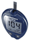

| Meter | Multisite | Sample Size | Test Time | Memory | Strips | Software | |
| OneTouch Basic |
 |
No | 10.0 microliters | 45 secs | 75 test | Basics -  |
Yes |
| OneTouch FastTake |
 |
No | 1.5 microliters | 15 secs | 150 test | FastTakes | Yes |
| OneTouch SureStep |
 |
No | 10.0 microliters | 15 secs | 150 test | SureSteps | Yes |
| OneTouch Ultra |
 | Yes | 1.0 microliters | 5 secs | 150 test | Ultras - |
Yes |
| OneTouch Ultra2 |
Yes | 1.0 microliters | 5 secs | 500 test | Ultras - |
Yes | |
| OneTouch UltraMini |
 |
Yes | 1.0 microliters | 5 secs | 50 test | Ultras - |
No |
| OneTouch UltraSmart |
 |
Yes | 1.0 microliters | 5 secs | 3000 test | Ultras - |
Yes |